Bevis med GPS, foto og vær
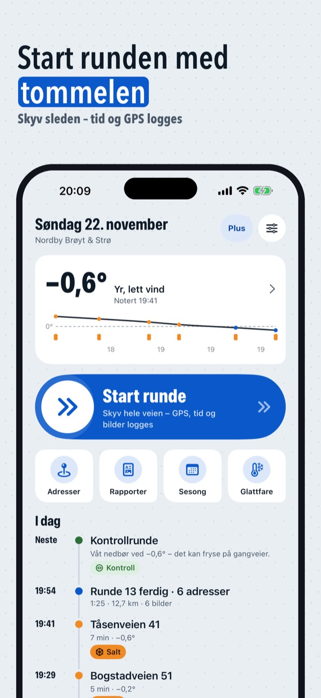
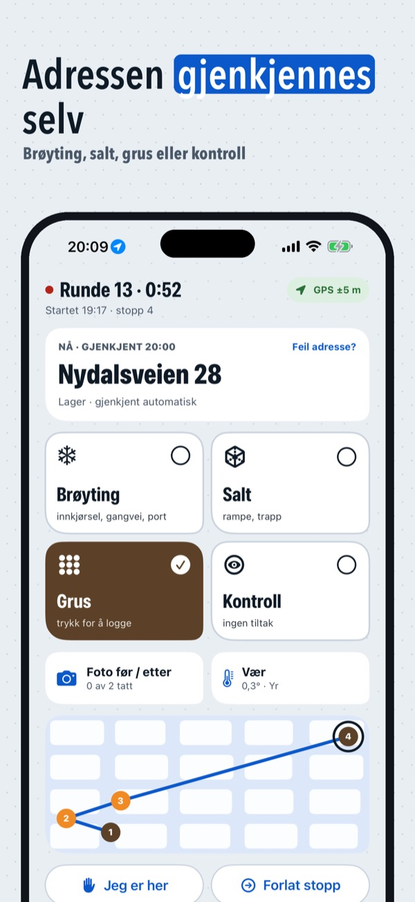
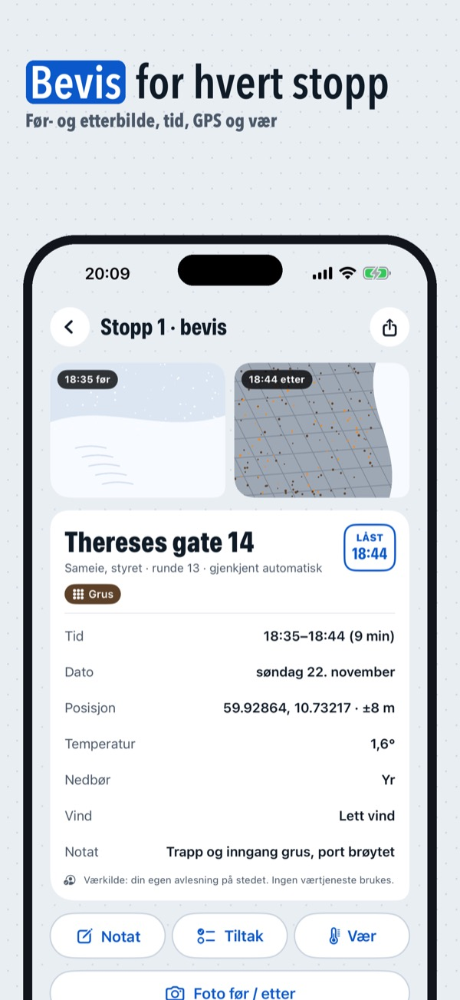
Glattis er loggboken for brøyting og strøing, laget for vaktmestere, brøytere og små firmaer som rydder fortau, innkjørsler og parkeringsplasser. Du starter runden med én bevegelse; Glattis kjenner igjen hver adresse i ruten og lagrer tidspunkt, posisjon, bilder og været du noterer på stedet. Når styret, kunden eller forsikringen spør, sender du en PDF per adresse.
Uten kjøp: 3 adresser, runder med GPS, bilder og værnotater, endringslogg og PDF-rapport med vannmerke. Glattis Plus er et engangskjøp – ikke abonnement: ubegrensede adresser, PDF uten vannmerke, CSV-eksport og sesongrapport. Familiedeling er inkludert. Ingen reklame, ingen konto, ingen sky: loggen og bildene blir på telefonen til du deler dem.
Glattis er et loggverktøy for egen dokumentasjon. Det gir ingen juridiske råd og ingen garanti for at loggen godtas som bevis. Værdata er dine egne avlesninger, og glattfare-tipset er en enkel regel, ikke et offisielt varsel. Posisjon brukes bare mens en runde pågår og appen er åpen.
Kommer snart i App Store for iPhone.
Bevis med GPS, foto och väder
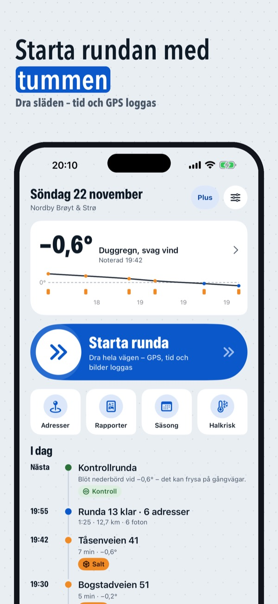
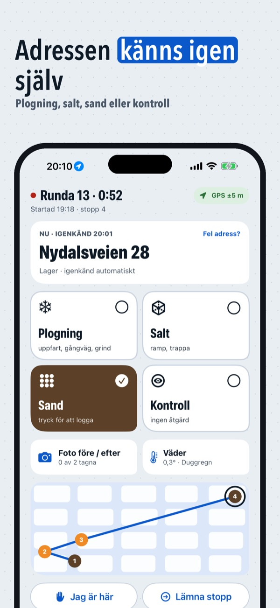
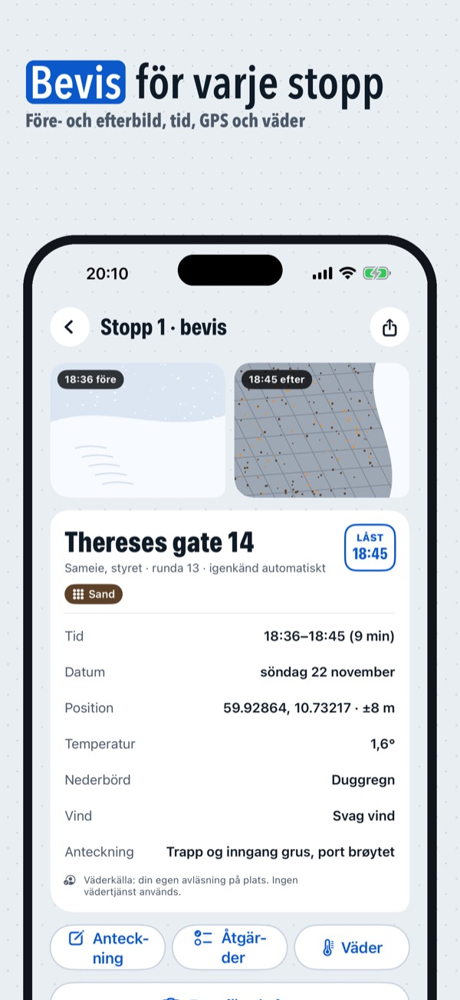
Glattis är loggboken för snöröjning och halkbekämpning, gjord för fastighetsskötare, plogare och små firmor som röjer trottoarer, uppfarter och parkeringar. Du startar rundan med en rörelse; Glattis känner igen varje adress på rutten och sparar tid, position, bilder och vädret du noterar på plats. När styrelsen, kunden eller försäkringen frågar skickar du en PDF per adress.
Utan köp: 3 adresser, rundor med GPS, bilder och väderanteckningar, ändringslogg och PDF-rapport med vattenstämpel. Glattis Plus är ett engångsköp – ingen prenumeration: obegränsat antal adresser, PDF utan vattenstämpel, CSV-export och säsongsrapport. Familjedelning ingår. Ingen reklam, inget konto, inget moln: loggen och bilderna stannar i telefonen tills du delar dem.
Glattis är ett loggverktyg för egen dokumentation. Det ger inga juridiska råd och ingen garanti att loggen godtas som bevis. Väderdata är dina egna avläsningar och halktipset är en enkel regel, ingen officiell varning. Positionen används bara medan en runda pågår och appen är öppen.
Snart i App Store för iPhone.
Todisteet: GPS, kuva ja sää
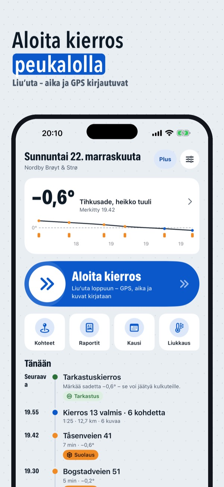
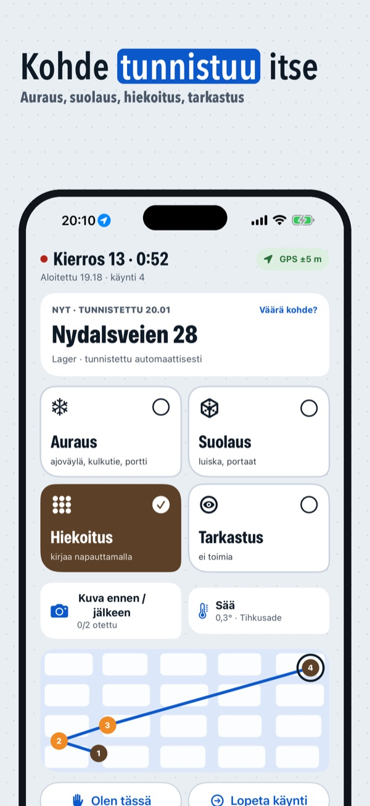
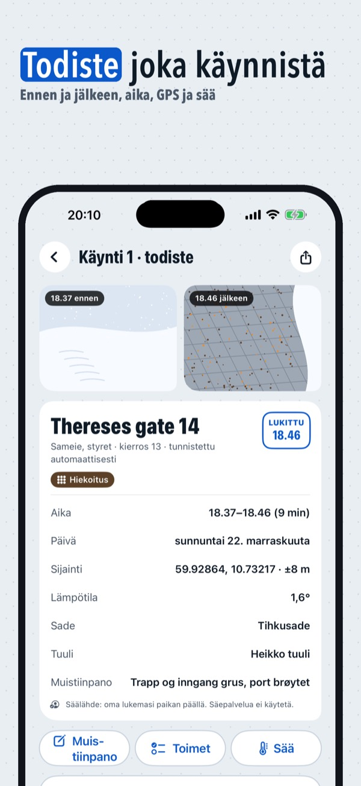
Glattis on auraus- ja hiekoituskirjanpito talonmiehille, auraajille ja pienille yrityksille, jotka pitävät jalkakäytävät, pihat ja pysäköintialueet kunnossa. Aloitat kierroksen yhdellä liikkeellä; Glattis tunnistaa reitin jokaisen kohteen ja tallentaa ajan, sijainnin, kuvat ja paikan päällä merkitsemäsi sään. Kun hallitus, asiakas tai vakuutusyhtiö kysyy, lähetät PDF:n kohteittain.
Ilman ostoa: 3 kohdetta, kierrokset GPS:llä, kuvat ja säämerkinnät, muutosloki ja vesileimattu PDF-raportti. Glattis Plus on kertaosto – ei tilausta: rajattomasti kohteita, PDF ilman vesileimaa, CSV-vienti ja kausiraportti. Perhejako sisältyy. Ei mainoksia, ei tiliä, ei pilveä: loki ja kuvat pysyvät puhelimessa, kunnes jaat ne.
Glattis on kirjaustyökalu omaan dokumentointiin. Se ei anna oikeudellisia neuvoja eikä takaa, että lokia hyväksytään todisteeksi. Säätiedot ovat omia lukemiasi, ja liukkausvinkki on yksinkertainen sääntö, ei virallinen varoitus. Sijaintia käytetään vain kierroksen aikana sovelluksen ollessa auki.
Tulossa pian App Storeen iPhonelle.
Bewijs met GPS, foto en weer
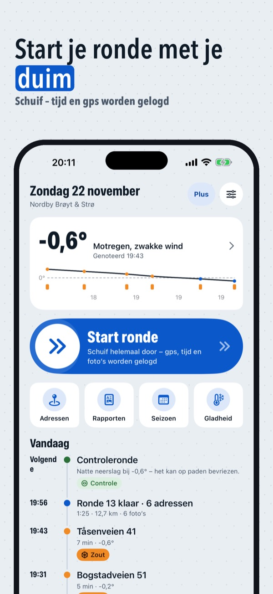
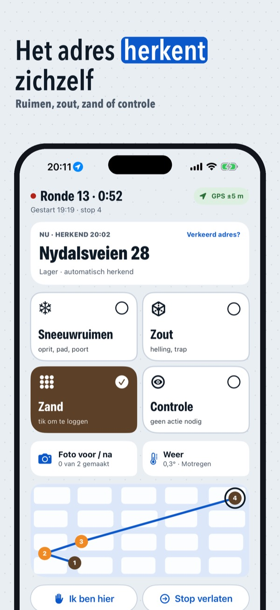
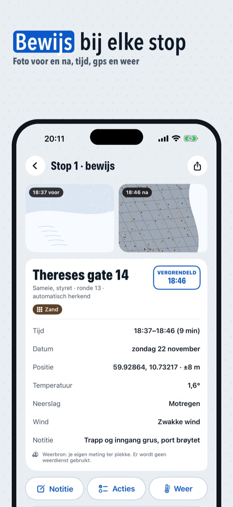
Glattis is het logboek voor strooien en sneeuwruimen, gemaakt voor beheerders, hoveniers en kleine bedrijven die stoepen, opritten en parkeerterreinen gladheidsvrij houden. Je start de ronde met één beweging; Glattis herkent elk adres op je route en bewaart tijd, positie, foto’s en het weer dat je ter plekke noteert. Vraagt de VvE, de klant of de verzekeraar ernaar, dan stuur je per adres een pdf.
Zonder aankoop: 3 adressen, rondes met gps, foto’s en weernotities, wijzigingslog en een pdf-rapport met watermerk. Glattis Plus is een eenmalige aankoop – geen abonnement: onbeperkt adressen, pdf zonder watermerk, csv-export en seizoensrapport. Delen met gezin inbegrepen. Geen reclame, geen account, geen cloud: logboek en foto’s blijven op je telefoon tot je ze deelt.
Glattis is een registratiehulpmiddel voor je eigen administratie. Het geeft geen juridisch advies en geen garantie dat het logboek als bewijs wordt aanvaard. Weergegevens zijn je eigen metingen en de gladheidstip is een eenvoudige regel, geen officiële waarschuwing. Locatie wordt alleen gebruikt tijdens een ronde, als de app open is.
Binnenkort in de App Store voor iPhone.
Dowód: GPS, zdjęcie i pogoda
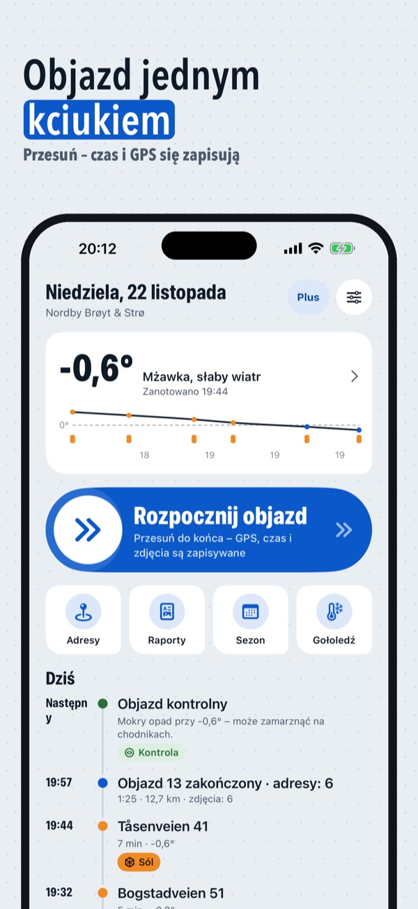
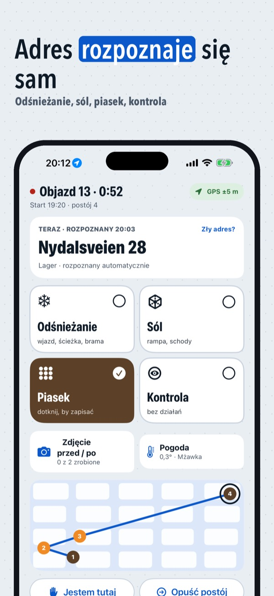
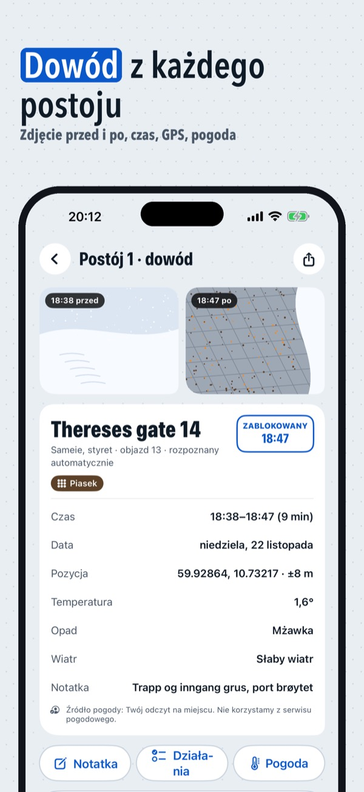
Glattis to dziennik odśnieżania i posypywania dla dozorców, firm odśnieżających i małych firm, które utrzymują chodniki, wjazdy i parkingi zimą. Objazd zaczynasz jednym ruchem; Glattis rozpoznaje każdy adres na trasie i zapisuje czas, pozycję, zdjęcia oraz pogodę zanotowaną na miejscu. Gdy pyta wspólnota, klient lub ubezpieczyciel, wysyłasz PDF dla każdego adresu.
Bez zakupu: 3 adresy, objazdy z GPS, zdjęcia i notatki pogodowe, dziennik zmian oraz raport PDF ze znakiem wodnym. Glattis Plus to zakup jednorazowy – bez subskrypcji: dowolna liczba adresów, PDF bez znaku wodnego, eksport CSV i raport sezonowy. Chmura rodzinna w cenie. Bez reklam, bez konta, bez chmury: dziennik i zdjęcia zostają w telefonie, dopóki ich nie udostępnisz.
Glattis to narzędzie do własnej dokumentacji. Nie udziela porad prawnych i nie gwarantuje, że dziennik zostanie uznany za dowód. Dane pogodowe to Twoje odczyty, a wskazówka o gołoledzi to prosta reguła, nie oficjalne ostrzeżenie. Lokalizacja jest używana tylko podczas objazdu, przy otwartej aplikacji.
Wkrótce w App Store na iPhone’a.
Nachweis mit GPS, Foto, Wetter
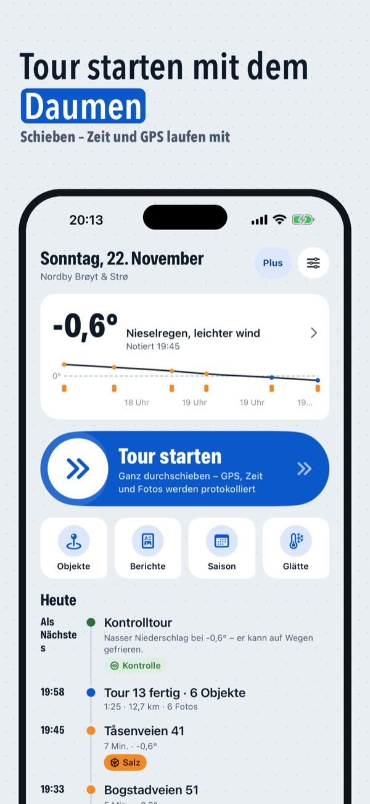
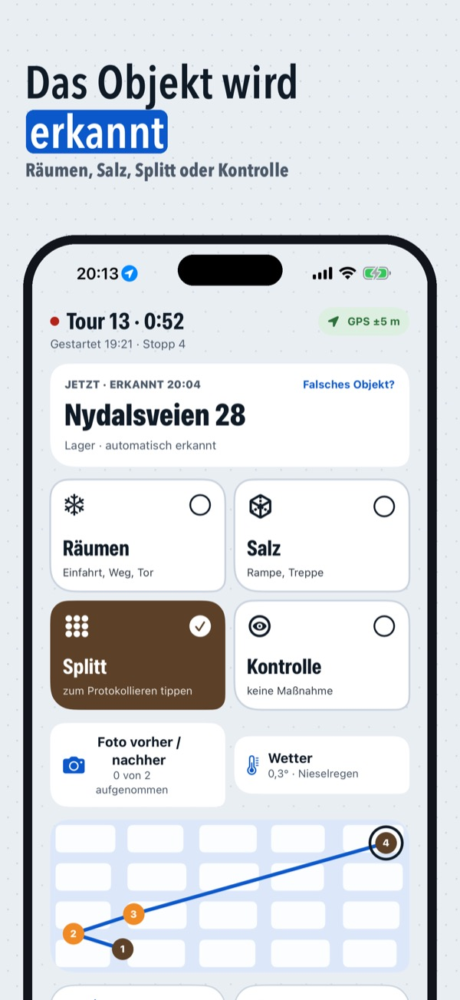
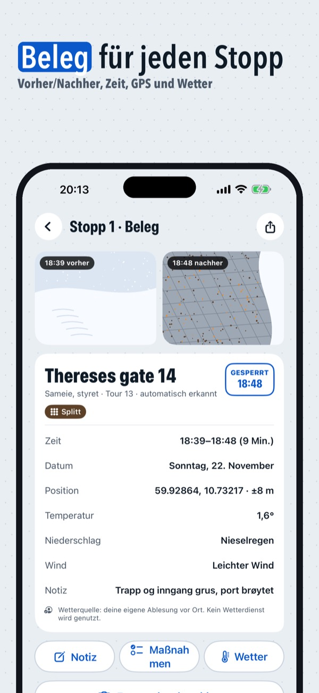
Glattis ist das Tourenbuch für Räumen und Streuen, gemacht für Hausmeister, Winterdienstler und kleine Betriebe, die Gehwege, Einfahrten und Parkplätze freihalten. Du startest die Tour mit einer Bewegung; Glattis erkennt jedes Objekt auf der Route und speichert Zeit, Position, Fotos und das Wetter, das du vor Ort notierst. Fragt die Verwaltung, der Kunde oder die Versicherung, schickst du ein PDF je Objekt.
Ohne Kauf: 3 Objekte, Touren mit GPS, Fotos und Wetternotizen, Änderungsprotokoll und PDF-Bericht mit Wasserzeichen. Glattis Plus ist ein Einmalkauf – kein Abo: unbegrenzte Objekte, PDF ohne Wasserzeichen, CSV-Export und Saisonbericht. Familienfreigabe inklusive. Keine Werbung, kein Konto, keine Cloud: Protokoll und Fotos bleiben auf dem Telefon, bis du sie teilst.
Glattis ist ein Protokollwerkzeug für die eigene Dokumentation. Es ist keine Rechtsberatung und keine Garantie, dass das Protokoll als Beweis anerkannt wird. Wetterwerte sind deine eigenen Ablesungen, der Glättehinweis ist eine einfache Regel, keine amtliche Warnung. Der Standort wird nur während einer Tour bei geöffneter App genutzt.
Bald im App Store für iPhone.